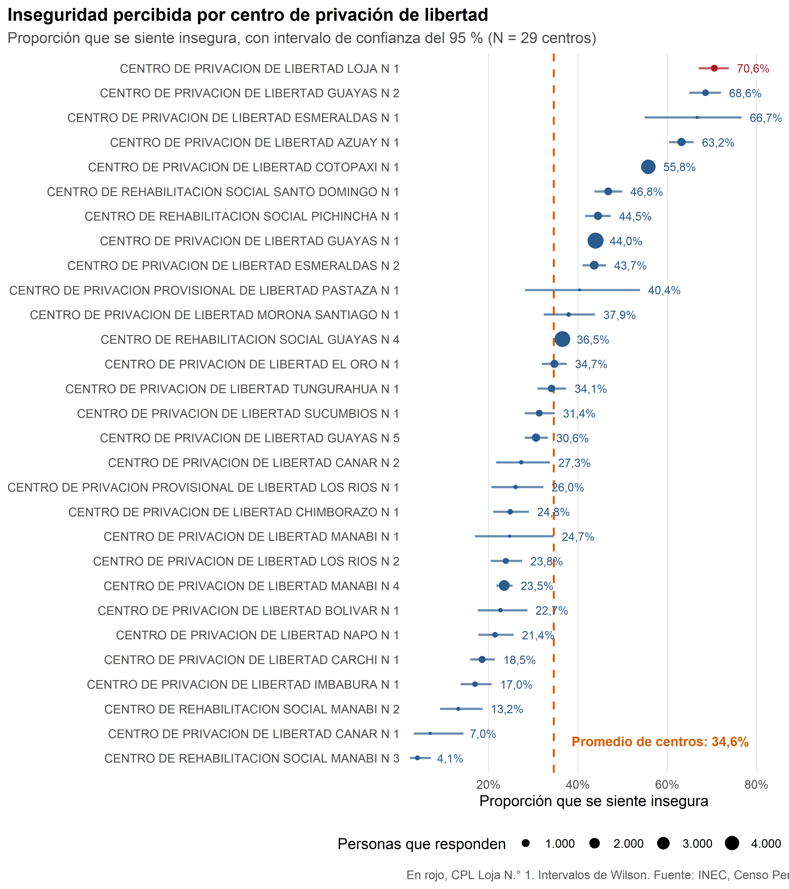
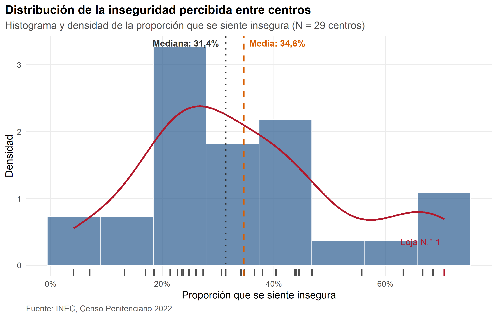
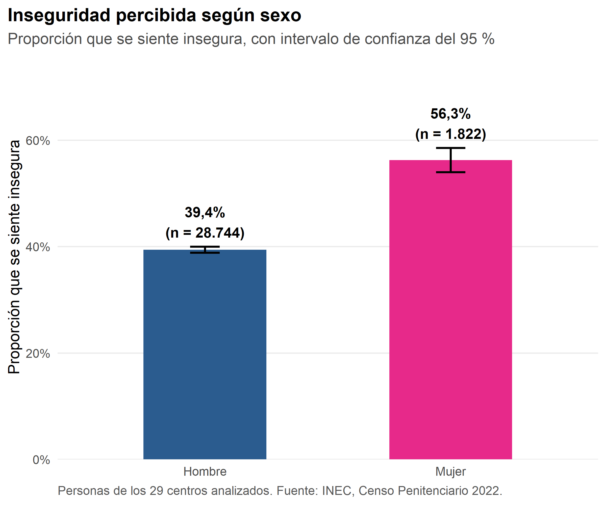
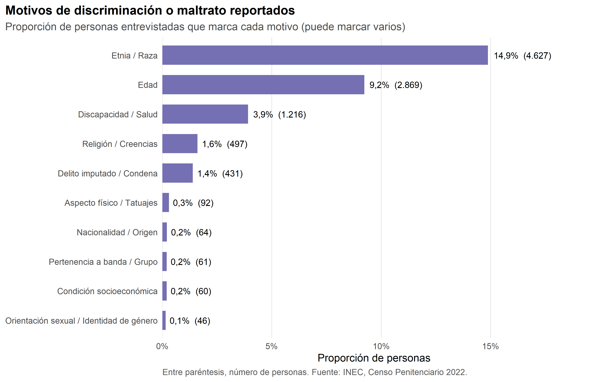
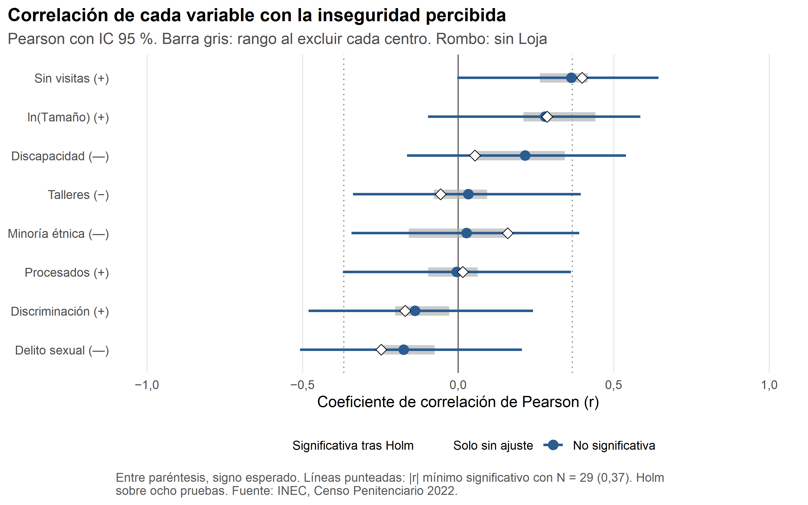
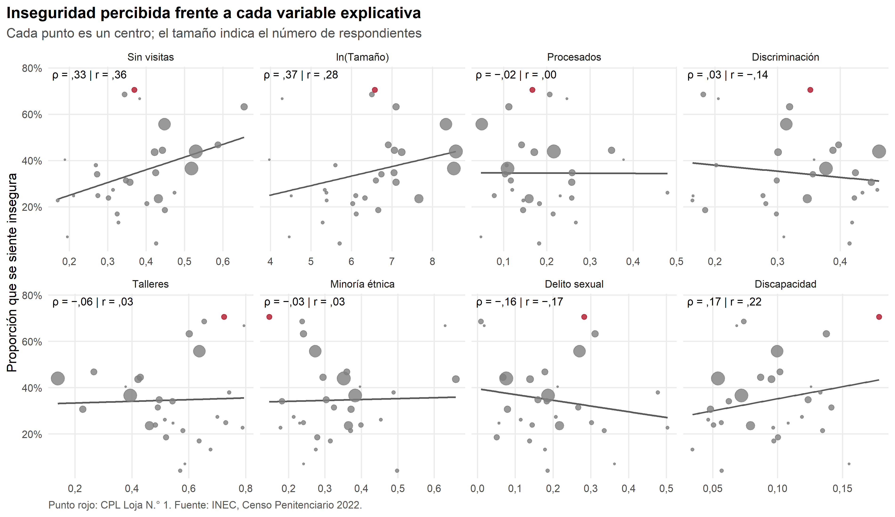
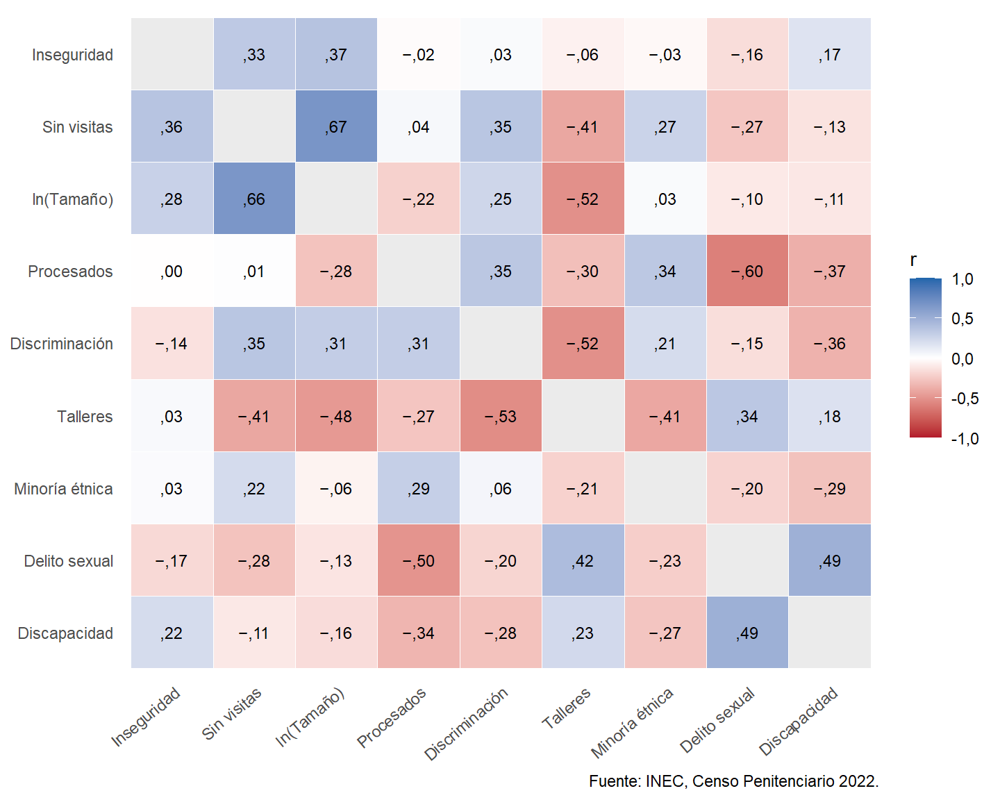

| Estadístico | Valor |
|---|---|
| Centros analizados | 29 |
| Personas que responden (total) | 30.566 |
| Proporción global (todas las personas) | 40,4 % |
| Media entre centros | 34,6 % |
| Desviación estándar entre centros | 17,8 % |
| Mediana | 31,4 % |
| Rango intercuartílico (Q1 – Q3) | 23,5 % – 44,0 % |
| Mínimo | 4,1 % (CENTRO DE REHABILITACION SOCIAL MANABI N 3) |
| Máximo | 70,6 % (CENTRO DE PRIVACION DE LIBERTAD LOJA N 1) |
| CPL Loja N.° 1 | 70,6 % (puesto 1 de 29) |
Datos y metodología
Datos y unidad de análisis
El análisis es de corte transversal y usa como unidad de análisis el centro de privación de libertad (CPL). La fuente es el Censo Penitenciario 2022 del Instituto Nacional de Estadística y Censos (Instituto Nacional de Estadística y Censos, 2022), en su versión depurada de microdatos por persona, que se resume por centro. Se incluyen los centros con 50 o más personas entrevistadas, lo que deja 29 centros. Como cada observación es un centro, los coeficientes describen asociaciones entre establecimientos y no relaciones entre individuos (Robinson, 1950).
Variables
La variable dependiente es la proporción de personas que declaran sentirse inseguras en su centro. Las variables explicativas se derivan de la revisión de literatura y se agrupan según el eje que las sustenta: la debilidad de los vínculos externos (visitas), la capacidad del Estado para ordenar la vida del centro (tamaño, rotación y oferta de talleres) y la discriminación o el maltrato que reportan los propios internos. El signo esperado se fijó antes de calcular los coeficientes. La rotación se aproxima con la proporción de procesados (signo esperado positivo, Skarbek, 2011) y la capacidad estatal con la proporción inscrita en talleres (signo esperado negativo). Las variables de composición no tienen signo esperado porque representan la explicación rival por importación (Irwin & Cressey, 1962; Steiner & Wooldredge, 2009; Wooldredge & Steiner, 2015). La Tabla 4.1 resume la definición, la fuente en el censo y el signo esperado de cada variable.
| Variable | Definición | Variable del censo | Eje de la revisión | Signo esperado |
|---|---|---|---|---|
| Inseguridad | Proporción de presos que se sienten inseguros en el centro, entre quienes responden | F1_S5P48 (ind_inseguro_cpl) | Victimización y percepción de seguridad | Dependiente |
| Sin visitas | Proporción que no ha recibido visitas de familiares o amigos | F1_S5P42 (ind_recibe_visitas) | Lazos sociales y visitas | + |
| ln(Tamaño) | Logaritmo natural de la población del centro | Personas entrevistadas por centro (cpl_cod) | Gobernanza criminal y protección privada (tamaño) | + |
| Procesados | Proporción de personas sin sentencia (medida de rotación) | F1_S4P12 (ind_sin_sentencia) | Gobernanza criminal y protección privada (rotación) | + |
| Discriminación | Motivos de discriminación o maltrato reportados, divididos entre la población | F1_S6P02 (motivos marcados) | Economía del crimen y de la prisión (demanda de protección) | + |
| Talleres | Proporción inscrita en talleres o actividades productivas | F1_S5P1501 a F1_S5P1504 (ind_actividad_ocup) | Control (capacidad estatal: oferta de talleres) | − |
| Minoría étnica | Proporción que se identifica como indígena, afroecuatoriana, negra, mulata o montubia | F1_S2_P11 (categorías 1 a 5) | Privación, importación y entorno (composición) | Sin signo |
| Delito sexual | Proporción de sentenciados por abuso o violación sexual | F1_S4P16 (categorías 11 y 12) | Privación, importación y entorno (composición) | Sin signo |
| Discapacidad | Promedio, en seis dominios, de la proporción con alguna dificultad | F1_S2_P0701 a F1_S2_P0706 | Privación, importación y entorno (composición) | Sin signo |
Nota. Elaboración propia a partir de la revisión de literatura y del Censo Penitenciario 2022 (Instituto Nacional de Estadística y Censos, 2022).
La tabla reúne las nueve variables del estudio. La inseguridad es la única variable dependiente. Cuatro variables tienen signo esperado positivo (sin visitas, tamaño, procesados y discriminación): se plantea que valores agregados mayores podrían asociarse con mayor inseguridad. Los talleres son la única variable con signo esperado negativo, porque aproximan la oferta institucional dentro del centro. Minoría étnica, delito sexual y discapacidad no tienen signo esperado: se incluyen como controles de composición agregada, sin atribuir a las personas efectos observados entre centros.
Distribución de la inseguridad percibida (objetivo específico 1)
El primer objetivo es descriptivo. Para cada centro se calcula la proporción de personas que se sienten inseguras entre quienes responden la pregunta, junto con su intervalo de confianza del 95 % de Wilson, que refleja que los centros pequeños estiman su proporción con menos precisión. La distribución entre centros se resume con la media, la desviación estándar, la mediana, el rango intercuartílico y los valores extremos, y se ubica al CPL Loja N.° 1 por su posición en el orden de mayor a menor inseguridad. La Tabla 4.2 presenta el resumen; las figuras muestran el ordenamiento de los centros (Figura 4.1), la forma de la distribución (Figura 4.2), la diferencia por sexo (Figura 4.3) y los motivos de discriminación o maltrato reportados (Figura 4.4).
Nota. La media entre centros da el mismo peso a cada centro; la proporción global da el mismo peso a cada persona. Fuente: INEC, Censo Penitenciario 2022.
Entre los 29 centros, en promedio el 34,6 % de las personas se siente insegura (mediana: 31,4 %). La desviación estándar es de 17,8 puntos porcentuales, y el 72 % de los centros queda a menos de una desviación estándar del promedio. La inseguridad va de 4,1 % en CENTRO DE REHABILITACION SOCIAL MANABI N 3 a 70,6 % en CENTRO DE PRIVACION DE LIBERTAD LOJA N 1, una diferencia de 66,4 puntos porcentuales entre el centro menos y el más inseguro. La proporción global (40,4 %) es mayor que la media entre centros: los centros con más personas son, en promedio, más inseguros. El CPL Loja N.° 1 ocupa el puesto 1 de 29, con 70,6 %.

La gráfica ordena los centros de mayor a menor inseguridad. Los más inseguros son CENTRO DE PRIVACION DE LIBERTAD LOJA N 1 (70,6 %), CENTRO DE PRIVACION DE LIBERTAD GUAYAS N 2 (68,6 %) y CENTRO DE PRIVACION DE LIBERTAD ESMERALDAS N 1 (66,7 %); los menos inseguros, CENTRO DE REHABILITACION SOCIAL MANABI N 3 (4,1 %), CENTRO DE PRIVACION DE LIBERTAD CANAR N 1 (7,0 %) y CENTRO DE REHABILITACION SOCIAL MANABI N 2 (13,2 %). Hay 13 centros por encima del promedio (línea discontinua), de un total de 29. Cada punto tiene su intervalo del 95 %: en 10 centros el intervalo queda por completo sobre el promedio, en 14 queda por completo bajo el promedio y en los otros 5 lo incluye; en estos últimos, la diferencia con el promedio no se distingue del azar de la muestra. El intervalo más ancho es el de CENTRO DE PRIVACION PROVISIONAL DE LIBERTAD PASTAZA N 1 (52 respuestas), porque los centros con pocas personas estiman su proporción con menos precisión.

La distribución tiene una cola hacia valores altos: la media (34,6 %) supera a la mediana (31,4 %) porque unos pocos centros con inseguridad alta la empujan hacia arriba. La mitad central de los centros tiene entre 23,5 % y 44,0 % de personas inseguras, un rango de 20,5 puntos porcentuales; el rango total es de 66,4 puntos. La dispersión relativa es alta: hay diferencias grandes entre centros (coeficiente de variación de 0,51).

Entre los hombres, el 39,4 % se siente inseguro (28.744 personas); entre las mujeres, el 56,3 % (1.822 personas). Las mujeres reportan más inseguridad que los hombres: la diferencia es de 16,9 puntos porcentuales y es estadísticamente significativa al 5 % (prueba de dos proporciones, p < ,001). El grupo de mujeres es más pequeño, por eso su intervalo de confianza es más ancho. Esta comparación es entre personas y no entre centros, y es solo descriptiva: no controla por el centro en que está cada persona.

El motivo más reportado es etnia o raza (14,9 % de las personas), seguido de edad (9,2 %) y discapacidad o salud (3,9 %). Los demás motivos quedan por debajo de 3,9 %. En total, el 27,9 % de las personas marca al menos un motivo. Las proporciones se calculan sobre todas las personas entrevistadas en los centros analizados, incluidas las que no marcaron ningún motivo. Esta variable alimenta la medida de discriminación del análisis de correlación.
Correlación
Coeficientes e inferencia
Para cada par de variables se calculan dos coeficientes:
r de Pearson, que mide la asociación lineal.
ρ de Spearman, que mide la asociación monótona a partir de los rangos y es menos sensible a centros extremos, como las cárceles de mayor población.
Las pruebas son bilaterales con nivel de significancia de 0,05. Los intervalos de confianza del 95 % se obtienen con la transformación z de Fisher (Fisher, 1921); para Spearman se usa el error estándar corregido de Bonett y Wright (Bonett & Wright, 2000):
\[ EE = \sqrt{\frac{1 + \rho^2 / 2}{n - 3}} \]
Comparaciones múltiples y sensibilidad
Comparaciones múltiples. Las ocho correlaciones con la variable dependiente forman una familia de pruebas confirmatorias, cuyos p-valores se ajustan con el método de Holm (Holm, 1979). Las demás correlaciones de la matriz, 28 pares entre variables explicativas, se reportan sin ajuste y como exploratorias.
Sensibilidad. Cada correlación con la variable dependiente se recalcula sin el CPL Loja N.° 1 y excluyendo cada centro de uno en uno (jackknife), para reportar el rango en que se mueve el coeficiente.
Potencia. Con 29 centros, una correlación necesita un valor absoluto cercano a 0,37 para ser significativa al 0,05. Por eso se interpreta el tamaño del coeficiente y su intervalo, y no solo el p-valor.
Presentación de los resultados
Las correlaciones con la variable dependiente se presentan en una tabla (Tabla 4.3) y en una gráfica de coeficientes con intervalos y sensibilidad (Figura 4.5), y se acompañan de diagramas de dispersión (Figura 4.6). La matriz completa se presenta en una tabla (Tabla 4.4) y en una gráfica (Figura 4.7). En ambas, los coeficientes de Pearson ocupan la parte inferior de la diagonal y los de Spearman la parte superior. La tabla de la matriz incluye la media y la desviación estándar de cada variable y marca con asteriscos la significancia sin ajuste. Cada tabla y cada figura va seguida de un párrafo de análisis.
| Variable | Signo esperado | r de Pearson [IC 95 %] | p | p (Holm) | ρ de Spearman | r sin Loja | Rango jackknife | Hipótesis 3 |
|---|---|---|---|---|---|---|---|---|
| Sin visitas | + | ,36 [,00; ,64] | ,052 | ,416 | ,33 | ,40 | ,26 a ,42 | — |
| ln(Tamaño) | + | ,28 [−,10; ,59] | ,141 | ,988 | ,37* | ,29 | ,21 a ,44 | — |
| Procesados | + | ,00 [−,37; ,36] | ,985 | 1.000 | −,02 | ,02 | −,10 a ,06 | — |
| Discriminación | + | −,14 [−,48; ,24] | ,476 | 1.000 | ,03 | −,17 | −,20 a −,03 | No se rechaza H0 |
| Talleres | − | ,03 [−,34; ,40] | ,863 | 1.000 | −,06 | −,06 | −,08 a ,09 | — |
| Minoría étnica | — | ,03 [−,34; ,39] | ,887 | 1.000 | −,03 | ,16 | −,16 a ,16 | — |
| Delito sexual | — | −,17 [−,51; ,21] | ,367 | 1.000 | −,16 | −,25 | −,25 a −,08 | — |
| Discapacidad | — | ,22 [−,16; ,54] | ,261 | 1.000 | ,17 | ,05 | ,05 a ,34 | — |
Nota. Holm aplicado a las ocho pruebas de Pearson. * p < ,05; ** p < ,01; *** p < ,001 para Spearman, sin ajuste. Rango jackknife: valores mínimo y máximo de r al excluir cada centro de uno en uno. Fuente: INEC, Censo Penitenciario 2022.
Ninguna de las 8 correlaciones con la inseguridad es significativa después del ajuste de Holm (el menor p ajustado es ,416, en Sin visitas). La asociación más fuerte es la de Sin visitas (r = ,36, moderada y positiva). Con 29 centros, un coeficiente necesita un valor absoluto de al menos 0,37 para ser significativo al 5 % sin ajuste. Con signo contrario al esperado aparece Discriminación (r = −,14). Al excluir el CPL Loja N.° 1, el coeficiente cambia como máximo 0,16 (Discapacidad: de ,22 a ,05). El rango jackknife cruza el cero en Procesados, Talleres y Minoría étnica: en esas variables el signo depende de qué centro se excluya. Pearson y Spearman coinciden en el signo en 5 de 8 variables; difieren en ,15 o más en Discriminación, lo que sugiere una relación no lineal o un centro extremo. Para la Hipótesis 3 (Discriminación), la tabla indica: «No se rechaza H0».

Cada punto es el coeficiente de Pearson de una variable con la inseguridad, y la línea es su intervalo de confianza del 95 %. Todos los intervalos incluyen el cero: con 29 centros, los datos no permiten afirmar que alguna de estas asociaciones sea distinta de cero. Los intervalos miden entre 0,65 y 0,73 unidades de r: con 29 centros, los coeficientes se estiman con poca precisión. La barra gris muestra el rango del coeficiente al excluir cada centro de uno en uno: en Procesados, Talleres y Minoría étnica el rango cruza el cero; la variable más sensible es Minoría étnica, cuyo coeficiente va de −,16 a ,16. El rombo rojo, que excluye el CPL Loja N.° 1, se separa más del punto azul en Discapacidad (de ,22 a ,05); en las demás variables la diferencia es menor.

Cada punto es un centro y la línea discontinua es la tendencia lineal. La relación más marcada es la de Sin visitas (r = ,36, ρ = ,33): los centros con valores más altos de «Sin visitas» tienden a tener más inseguridad. En Procesados, Talleres y Minoría étnica (|r| < ,10) la nube de puntos no muestra una tendencia clara. El CPL Loja N.° 1 (en rojo) se separa del resto en Inseguridad (2,0 desviaciones estándar sobre la media) y Discapacidad (2,3 desviaciones estándar sobre la media). Con solo 29 puntos, un centro extremo puede mover la recta; por eso el rango jackknife de la Tabla 4.3 sirve de comprobación.
| Variable | M | DE | 1 | 2 | 3 | 4 | 5 | 6 | 7 | 8 | 9 |
|---|---|---|---|---|---|---|---|---|---|---|---|
| 1. Inseguridad | 0,35 | 0,18 | — | ,33 | ,37* | −,02 | ,03 | −,06 | −,03 | −,16 | ,17 |
| 2. Sin visitas | 0,37 | 0,12 | ,36 | — | ,67*** | ,04 | ,35 | −,41* | ,27 | −,27 | −,13 |
| 3. ln(Tamaño) | 6,32 | 1,21 | ,28 | ,66*** | — | −,22 | ,25 | −,52** | ,03 | −,10 | −,11 |
| 4. Procesados | 0,19 | 0,10 | ,00 | ,01 | −,28 | — | ,35 | −,30 | ,34 | −,60*** | −,37* |
| 5. Discriminación | 0,33 | 0,09 | −,14 | ,35 | ,31 | ,31 | — | −,52** | ,21 | −,15 | −,36 |
| 6. Talleres | 0,54 | 0,16 | ,03 | −,41* | −,48** | −,27 | −,53** | — | −,41* | ,34 | ,18 |
| 7. Minoría étnica | 0,33 | 0,12 | ,03 | ,22 | −,06 | ,29 | ,06 | −,21 | — | −,20 | −,29 |
| 8. Delito sexual | 0,20 | 0,12 | −,17 | −,28 | −,13 | −,50** | −,20 | ,42* | −,23 | — | ,49** |
| 9. Discapacidad | 0,09 | 0,04 | ,22 | −,11 | −,16 | −,34 | −,28 | ,23 | −,27 | ,49** | — |
Nota. Pearson bajo la diagonal y Spearman sobre la diagonal. * p < ,05; ** p < ,01; *** p < ,001, sin ajuste por comparaciones múltiples. Fuente: INEC, Censo Penitenciario 2022.
La tabla muestra todas las correlaciones; las de la inseguridad (primera fila y primera columna) se analizaron en la tabla anterior. Entre las 28 combinaciones de variables explicativas, 7 tienen p < ,05 sin ajuste. Como son 28 pruebas, por azar se esperarían unas 1,4 significativas, por eso estas correlaciones se leen como exploratorias. Las más altas son Sin visitas con ln(Tamaño) (r = ,66), Discriminación con Talleres (r = −,53) y Procesados con Delito sexual (r = −,50). Hay pares con relación moderada o alta (|r| ≥ ,50): si se incluyen en un mismo modelo, parte de la información que aportan se solapará. Las columnas M y DE resumen cada variable: ln(Tamaño) está en logaritmos, por eso su media no es una proporción.

La figura muestra la misma información de la tabla en colores: azul indica asociación positiva, rojo negativa, y cuanto más intenso el color, más fuerte la relación. La pareja con la relación más intensa es ln(Tamaño) con Sin visitas (r = ,66). En 33 de los 36 pares, Pearson y Spearman difieren en menos de ,15; la mayor diferencia está en Minoría étnica con Talleres (r = −,21, ρ = −,41), señal de posible no linealidad o de sensibilidad a un centro extremo.
Modelo de respuesta fraccionaria (objetivos específicos 3 y 4)
La respuesta del modelo es la proporción de respuestas válidas que reportan inseguridad en cada centro, (y_i=_i/n_i), donde (n_i) es el número de respuestas válidas a la pregunta. Para los 29 centros se estima un modelo logit fraccional por cuasiverosimilitud (Papke & Wooldridge, 1996):
\[ \operatorname{logit}(\mu_i) = \log\!\left(\frac{\mu_i}{1-\mu_i}\right) = \beta_0 + \beta_1\log(\text{personas}_i) + \beta_2\,\text{sin visitas}_i + \beta_3\,\text{talleres}_i + \beta_4\,\text{procesados}_i, \qquad \mu_i=E(y_i\mid X_i). \]
La variable dependiente y las tres covariables expresadas como proporciones están entre 0 y 1; el tamaño se expresa como el logaritmo natural del número de personas entrevistadas por centro. Los coeficientes describen asociaciones condicionales entre centros: no son cambios porcentuales directos ni efectos causales. La especificación no permite inferir que una característica agregada describa a una persona particular.
La estimación y los diagnósticos se implementan en R/03_modelos.R. Tanto este capítulo como el resumen (index.qmd) llaman a las mismas funciones, de modo que las cifras del resumen se recalculan a partir de los datos y no se copian manualmente.
Se estiman dos variantes para mostrar qué cambia al dar el mismo peso a cada centro o a cada respuesta:
- Sin ponderar: cada centro tiene peso uno; describe la relación promedio entre centros.
- Ponderada por respuestas válidas: se usa (n_i) como peso de cuasiverosimilitud. La estimación da mayor peso a los centros con más respuestas a la pregunta de inseguridad. No es un ponderador muestral del diseño del censo ni una corrección por selección de centros.
La función objetivo de cuasiverosimilitud emplea (w_i=1) en el modelo sin ponderar y (w_i=n_i) en el ponderado:
\[ Q(\boldsymbol{\beta}) = \sum_{i=1}^{N} w_i\left[ y_i\log(\mu_i) + (1-y_i)\log(1-\mu_i) \right], \qquad \operatorname{logit}(\mu_i)=X_i\boldsymbol{\beta}. \]
En ambas variantes, la matriz de covarianza principal es robusta a heterocedasticidad tipo HC3, recomendada como ajuste de muestra pequeña (Long & Ervin, 2000; MacKinnon & White, 1985). Los intervalos del 95 % y las pruebas bilaterales usan una distribución t con 24 grados de libertad ((N-k), con 5 parámetros, incluida la constante). HC0 se presenta como sensibilidad, dado que la conclusión del resumen cambia con la corrección de varianza. No se calcula una matriz cluster-robusta: cada fila ya representa un centro y no hay observaciones individuales repetidas dentro de cada unidad analítica.
Estimaciones e inferencia
| Modelo | Variable | Coeficiente | EE robusto HC3 | IC 95 % | p (t) |
|---|---|---|---|---|---|
| Sin ponderar | Constante | -4,006 | 2,344 | [-8,844; 0,832] | ,100 |
| Sin ponderar | ln(Tamaño) | 0,205 | 0,264 | [-0,340; 0,749] | ,445 |
| Sin ponderar | Sin visitas | 2,182 | 2,094 | [-2,140; 6,503] | ,308 |
| Sin ponderar | Talleres | 1,785 | 1,586 | [-1,488; 5,059] | ,271 |
| Sin ponderar | Procesados | 1,413 | 2,245 | [-3,221; 6,047] | ,535 |
| Ponderado por n_resp | Constante | -4,500 | 2,049 | [-8,728; -0,272] | ,038 |
| Ponderado por n_resp | ln(Tamaño) | 0,249 | 0,262 | [-0,291; 0,790] | ,350 |
| Ponderado por n_resp | Sin visitas | 2,500 | 1,850 | [-1,319; 6,319] | ,189 |
| Ponderado por n_resp | Talleres | 1,924 | 1,467 | [-1,104; 4,952] | ,202 |
| Ponderado por n_resp | Procesados | 1,436 | 1,649 | [-1,967; 4,838] | ,392 |
Nota. La categoría ponderada usa el número de respuestas válidas del centro (n_resp) como peso; la categoría sin ponderar da el mismo peso a los 29 centros. Las pruebas e intervalos usan errores HC3 y 24 grados de libertad. El modelo es una cuasiverosimilitud para respuesta fraccionaria, no una regresión lineal de proporciones.
En la estimación principal HC3, el coeficiente de tamaño y el de proporción sin visitas se reportan con sus intervalos y valores p en la tabla. Para la variante ponderada, la sensibilidad a HC0 es:
| Variable | Coeficiente | EE robusto HC0 | p (t) |
|---|---|---|---|
| ln(Tamaño) | 0,249 | 0,144 | ,097 |
| Sin visitas | 2,500 | 0,978 | ,017 |
Esta comparación permite ver que la evidencia estadística de las asociaciones principales depende del estimador robusto elegido. Por ello, HC3 se conserva como análisis principal dado el reducido número de unidades, mientras que HC0 se interpreta únicamente como comprobación de sensibilidad, no como una especificación seleccionada por producir valores p menores.
Influencia y sensibilidad leave-one-out
Se vuelve a estimar cada especificación 29 veces, excluyendo un centro distinto en cada iteración. El rango de coeficientes y el número de exclusiones que cambian su signo se calculan directamente:
| Modelo | Variable | Mínimo leave-one-out | Máximo leave-one-out | Centro que más mueve el coeficiente | Cambio absoluto máximo | Exclusiones que cambian el signo |
|---|---|---|---|---|---|---|
| Ponderado por n_resp | ln(Tamaño) | 0,083 | 0,384 | CENTRO DE PRIVACION DE LIBERTAD COTOPAXI N 1 | 0,167 | 0 |
| Ponderado por n_resp | Procesados | 0,867 | 2,461 | CENTRO DE REHABILITACION SOCIAL SANTO DOMINGO N 1 | 1,025 | 0 |
| Ponderado por n_resp | Sin visitas | 0,986 | 2,903 | CENTRO DE PRIVACION DE LIBERTAD AZUAY N 1 | 1,514 | 0 |
| Ponderado por n_resp | Talleres | 1,072 | 2,814 | CENTRO DE PRIVACION DE LIBERTAD GUAYAS N 1 | 0,890 | 0 |
| Sin ponderar | ln(Tamaño) | 0,118 | 0,340 | CENTRO DE PRIVACION DE LIBERTAD ESMERALDAS N 1 | 0,135 | 0 |
| Sin ponderar | Procesados | 0,652 | 3,072 | CENTRO DE PRIVACION PROVISIONAL DE LIBERTAD LOS RIOS N 1 | 1,659 | 0 |
| Sin ponderar | Sin visitas | 1,026 | 2,866 | CENTRO DE PRIVACION DE LIBERTAD ESMERALDAS N 1 | 1,156 | 0 |
| Sin ponderar | Talleres | 1,149 | 2,758 | CENTRO DE PRIVACION PROVISIONAL DE LIBERTAD PASTAZA N 1 | 0,973 | 0 |
Los diagnósticos complementan ese ejercicio. Se señalan los centros con mayor distancia de Cook y leverage en cada especificación; los umbrales (4/N) y (2k/N) son reglas exploratorias para alertar sobre posible influencia, no criterios automáticos de exclusión.
| Modelo | Centro con mayor Cook | Cook máximo | Centros sobre 4/N | Centro con mayor leverage | Leverage máximo | Centros sobre 2k/N |
|---|---|---|---|---|---|---|
| Sin ponderar | CENTRO DE PRIVACION PROVISIONAL DE LIBERTAD PASTAZA N 1 | 0,334 | 3 | CENTRO DE PRIVACION PROVISIONAL DE LIBERTAD LOS RIOS N 1 | 0,453 | 3 |
| Ponderado por n_resp | CENTRO DE PRIVACION DE LIBERTAD GUAYAS N 1 | 0,997 | 5 | CENTRO DE PRIVACION DE LIBERTAD GUAYAS N 1 | 0,659 | 6 |
La exclusión de centros es un diagnóstico, no la base del resultado principal: se conserva la muestra completa. El leave-one-out informa cuánto varían las estimaciones sin cada centro, pero con 29 unidades la potencia es limitada y tanto los coeficientes como sus errores pueden ser sensibles a observaciones de alto leverage.
Alcance y limitaciones
El diseño es transversal y de pocas unidades: las correlaciones indican asociación y no permiten establecer causalidad.
Los coeficientes se calculan entre centros y no se trasladan al comportamiento de las personas (Robinson, 1950).
Una correlación bivariada no equivale a la asociación condicional dentro de un modelo multivariado, donde el ajuste por otras variables puede cambiar su magnitud.
La inseguridad y la discriminación son percepciones de las mismas personas, por lo que su asociación puede reflejar una retroalimentación.
Los signos esperados son hipótesis y no hallazgos establecidos. La literatura sobre visitas y victimización estudia sobre todo la mala conducta, las agresiones y la reincidencia, no la sensación de inseguridad, y las fuentes revisadas no incluyen estudios del sistema penitenciario ecuatoriano.